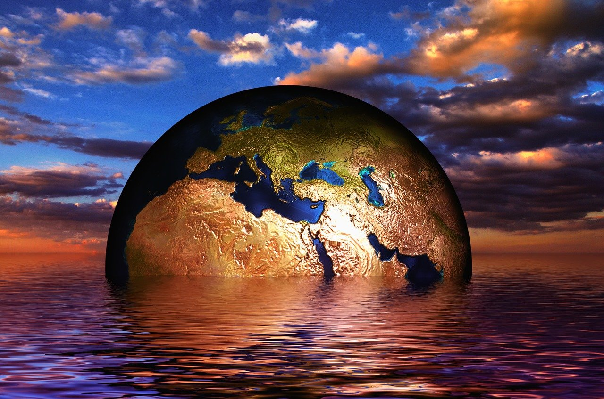

Climate Change
What is climate change?
Climate change refers to long-term shifts in temperatures and weather patterns. Such shifts can be natural, due to changes in the sun’s activity or large volcanic eruptions. But since the 1800s, human activities have been the main driver of climate change, primarily due to the burning of fossil fuels like coal, oil and gas. Burning fossil fuels generates greenhouse gas emissions that act like a blanket wrapped around the Earth, trapping the sun’s heat and raising temperatures.
The main greenhouse gases that are causing climate change include carbon dioxide and methane. These come from using gasoline for driving a car or coal for heating a building, for example. Clearing land and cutting down forests can also release carbon dioxide. Agriculture, oil and gas operations are major sources of methane emissions. Energy, industry, transport, buildings, agriculture and land use are among the main sectors causing greenhouse gases.

How imminent is the current situation regarding climate change?
Global climate change is not a future problem. Changes to Earth’s climate driven by increased human emissions of heat-trapping greenhouse gases are already having widespread effects on the environment: glaciers and ice sheets are shrinking, river and lake ice is breaking up earlier, plant and animal geographic ranges are shifting, and plants and trees are blooming sooner.
Effects that scientists had long predicted would result from global climate change are now occurring, such as sea ice loss, accelerated sea level rise, and longer, more intense heat waves.

But can one be sure it is actually a real phenomenen
Scientists demonstrated the heat-trapping nature of carbon dioxide and other gases in the mid-19th century.2 Many of the science instruments NASA uses to study our climate focus on how these gases affect the movement of infrared radiation through the atmosphere. From the measured impacts of increases in these gases, there is no question that increased greenhouse gas levels warm Earth in response.
What can one do about climate change?
Save energy at home
Much of our electricity and heat are powered by coal, oil and gas. Use less energy by reducing your heating and cooling use, switching to LED light bulbs and energy-efficient electric appliances, washing your laundry with cold water, or hanging things to dry instead of using a dryer. Improving your home’s energy efficiency, through better insulation for instance, or replacing your oil or gas furnace with an electric heat pump can reduce your carbon footprint by up to 900 kilograms of CO2e per year. Get more energy tips for your home here.
Change your home's source of energy
Ask your utility company if your home energy comes from oil, coal or gas. If possible, see if you can switch to renewable sources such as wind or solar. Or install solar panels on your roof to generate energy for your home. Switching your home from oil, gas or coal-powered energy to renewable sources of energy, such as wind or solar, can reduce your carbon footprint by up to 1.5 tons of CO2e per year. Learn more about why switching to renewable energy is key to tackling the climate crisis.
Walk, bike or take public transport
The world’s roadways are clogged with vehicles, most of them burning diesel or gasoline. Walking or riding a bike instead of driving will reduce greenhouse gas emissions -- and help your health and fitness. For longer distances, consider taking a train or bus. And carpool whenever possible. Living car-free can reduce your carbon footprint by up to 2 tons of CO2 per year compared to a lifestyle using a car. Learn more about how to green your travel.
Feel free to enter what country you're in and it's temperature in celsius!